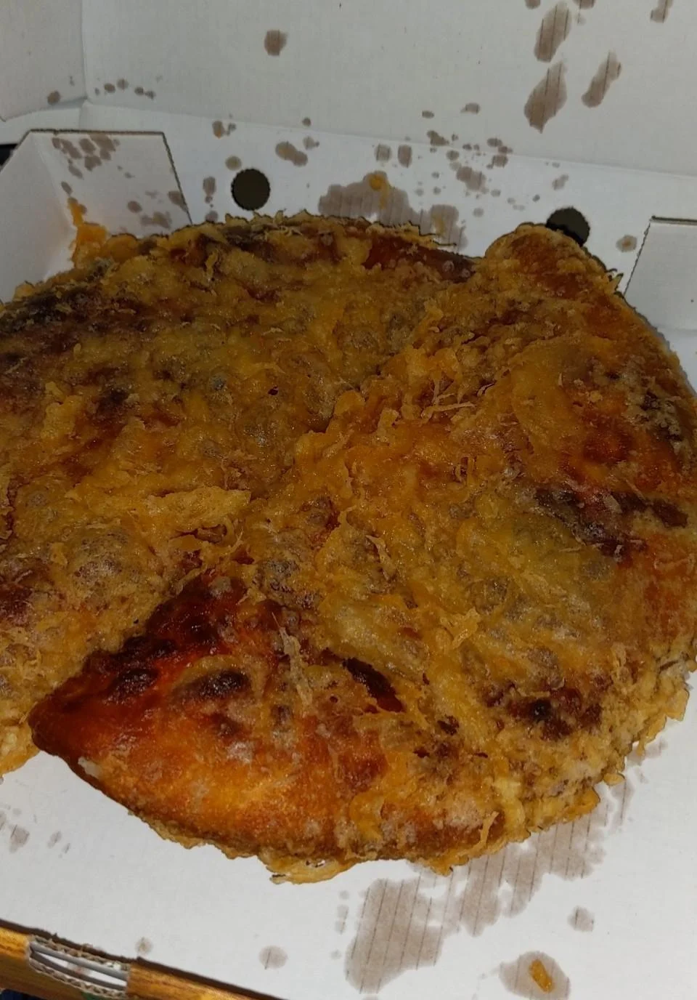

Deep Fried Pizza

This recipe is a staple in many American peeps' kitchens. Here is my rendition of it.
Ingredients:
- 16 ounces of flour (whichever kind you prefer)
- .5 ounces of salt
- 1 teaspoon of yeast
- 1 gallon of vegetable oil
- 2 lbs of pepperoni
- .5 lbs of cheddar cheese
- 5 cups of butter
- And don't forget a pinch of disrespect for Italian culture and cuisine.
Now that you have prepared all of the necessary ingredients, let's get started:
Steps:
- Mix up the flour, yeast, salt, and butter together, until you end up with a homogenous mixture.
- Put a pan on medium heat and add all the vegetable oil.
- Roll the dough from step 1 into a round(-ish) shape, and add the pepperoni and cheddar cheese.
- Put the uncooked pizza from the last step into the oil.
- Wait until the outside of the pizza has a goldish-brown color.
- Take the pizza out, and sprinkle on top of it the pinch of disrespect for Italian culture and cuisine.
You're done!
Enjoy your tasty, healthy, and hell-yeah-American meal!